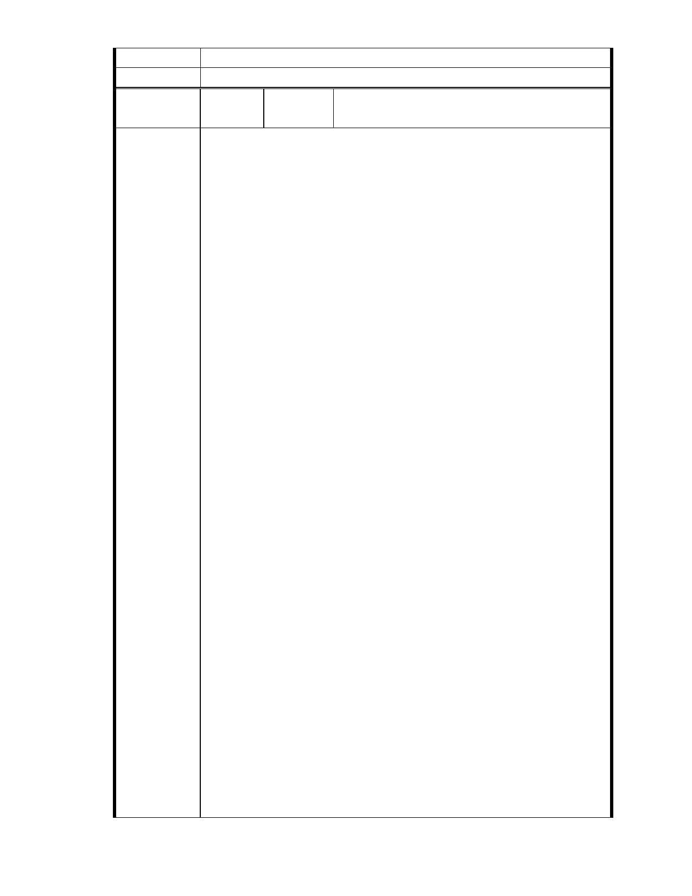

二、相關陳情意見將納入本案審查人民意見，依法定程序辦理。
委 員 會 決 議 同編號 1。
編
號 112
陳情人 陳 乃 立 （ MA201210160139 ）、 孫 文 郁
（MA201210160058 ）
主旨：
有關「變更臺北市內湖區成功路五段大湖公園北側部分保護區及道路用
地為社會福利特定專用區主要計畫案」暨「擬訂臺北市內湖區成功路五
段大湖公園北側社會福利特定專用區細部計畫案」，依據都市計畫法第 19
條第 1 項規定提出人民陳情意見，茲三度檢具 99 份「反對慈濟將內湖保
護區變更開發」陳情意見，約佔所有連署人 1/50，提供 台北市都市計畫
委員會審議參考。
說明：
三度檢具「台灣連署資源運籌平台」
(http://campaign.tw-npo.org/sign.php?id=2010102608195900) 「反對慈濟將
內湖保護區變更開發」連署活動，其中 99 份個人連署意見：(詳
http://campaign.tw-npo.org/full_personal_list.php?id=2010102608195900&p
age=12 )，請查照：
一、林玟秀：「只要先例一開，台北市其他的保護區，哪個資本家不會效
法呢？」
陳情理由
二、張金蘭：「慈濟--好諷刺的"做環保",集眾人之力叫大家幫忙做環保回
收,將環保回收的環保金買了有很多大自然的內湖,若是真環保應是更努
力保護這上天賜的大禮物,怎麼是收了環保金後勇敢做環保迫害者,又陷
幫忙的眾人於不公不義的情況中,真是叫人情何以堪?難道是假面人出
現?」
三、張又勻 Yu-yun. Chang：「不要讓淹水重演，蓋志工大樓真的有必要
在這裡蓋嗎？」
四、陳志中：「慈濟應該不會不知道「水土保育的生態示範園區」是在幹
嘛的;在環境敏感地區做開發,會造成不可收拾的後果,難道慈濟不知道歷
史嗎?歷年來的重大天然災害大多是因為早年沒有環境保護觀念所造成
的後果,難道"慈濟"能夠使傷害復原嗎?」
五、betty betty：「哪個地方不選?!為何要選生態保護區呢?難道這是慈濟
在內湖區所為提倡環保嗎?對慈濟好失望喔!我是內湖居民, 我不想被水
再次淹沒(納莉風災那次淹掉一層樓ㄟ),慈濟該再考慮其他地方吧!」
六、吳小秋：「反對保護區開發 現今講求回歸大自然 生態環境已經夠惡
劣了 很多地方的開發雖然可以帶來觀光或其他 但也大大的破壞自然的
平衡 也改變人的生活」
七、卓 寅 cho yin：「任何團體都是人組合而成的，團體之召集人及指
導人必須時時留心注意導正，否則就要負責，同時也表示該團體是否仍
需要繼續存在，請上人面對社會大眾說話．給未來眾生留路走，大家辛
苦了．」
- 114 -